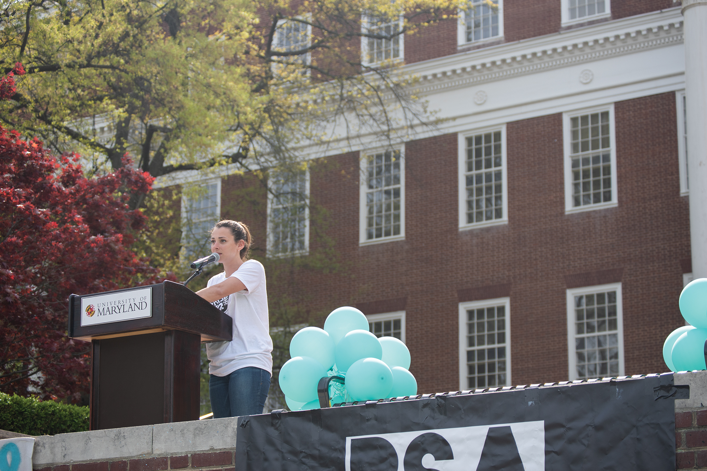

Reclaiming Their Identity
Incidents of sexual violence at UMD have increased over the past five years, but investigations in complaints have gone down. Campus organizations rally and hold events to let survivors know they're not alone.
Sexually assaulted by another student in October 2014, she decided to take action. University alumna McLaine Rich founded PSA (Preventing Sexual Assault) in 2015, which holds panels, discussions, and demonstrations to bring survivors together and have a conversation. They aim to educate students while providing support for victims. PSA holds Occupy McKeldin (among other events) every spring, where different campus outlets organize an event where victims may share their stories and find support among their peers.
Preventing Sexual Assault (PSA) hosts Slut Walk to bring attention to sexual assault on campus.(The Diamondback)
"It's something we can't escape"
PSA President Rachel Colonomos speaks at this year's Occupy McKeldin. (Joe Ryan/The Diamondback)
In this year's Occupy McKeldin, more than 1,000 students turned out for the event to hear survivors talk about their stories and also learn about resources on campus available to help victims, such as CARE to Stop Violence and the Office of Civil Rights and Sexual Misconduct. PSA's President, Rachel Colonomos, explains how "so many more people than one could ever imagine" are victims of sexual violence. "It's something we can't escape" said Colonomos to the crowd at Ocuupy McKeldin.
The Office of Civil Rights and Sexual Misconduct at UMD receives reports of potential sexual misconduct, often by third parties. The number of reports has increased about 122 percent from 2014, when OCRSM was established.
Source: Data collected by The Office of Civil Rights and Sexual Misconduct UMDThe Office of Civil Rights and Sexual Misconduct, established in 2014, has seen a spike in records related to sexual assault complaints. Each school year they publish records related to sexual misconduct, which include formal complaints and reports over the campus. In the 2017-2018 academic year, OCRSM received a total of 249 reports of possible sexual misconduct, with 91 of them becoming formal complaints. These numbers represent a spike from numbers from the previous 2016-2017 academic year, with 208 reports and 80 formal complaints.
While reports have increased about 122 percent from when OCRSM was established in 2014, and formal complaints have increased around 90 percent, the number of investigations has dropped from the first three years.
Despite an increase in reports, the University of Maryland investigated fewer reports than last school year. The number dropped from 27 investigations in 2016-17, an all-time high for the office, to 16 investigations in 2017-18, an all-time low.
A majority of the incidents of the 91 formal complaints took place on campus. Virtual means through phone, social media, texting, etc.
Source: Data collected by The Office of Civil Rights and Sexual MisconductIncidents of sexual violence were reported happening at different locations during the 2017-18 year. Not all cases happen on campus, and some of the incidents were not physical but rather virtually, either through texts, social media, or other forms of communication.
CARE (Campus Advocates Respond and Educate) to Stop Violence is another source on campus for victims of sexual assault. They are not, however, an official reporting entity and keep information private, so the real number of sexual assault cases on campus is unknown. They work with students through education, advocacy and counseling. They also connect students to legal services, if the victim decides to report the case.
UMPD wore teal ribbons to bring awareness to sexual assault on campus. (Samantha Hawkins/The Diamondback)
The University of Maryland Police Department also responds to and investigates any violation of the university's sexual misconduct policy, and they refer it to OCRSM. This year, the UMPD wore teal ribbons to raise awareness for Sexual Assault Awareness Month, which is in April. "We want to let people know what their options are and what's available to them," said police spokesperson Sgt. Rosanne Hoaas. "It's a year-long endeavor--sexual assault awareness. It's not just the month of April."